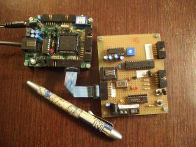
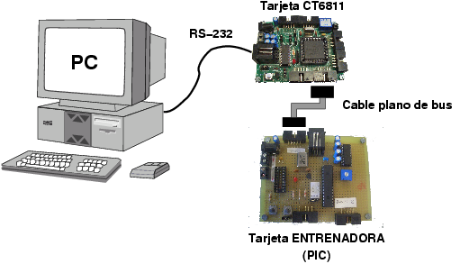
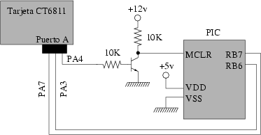
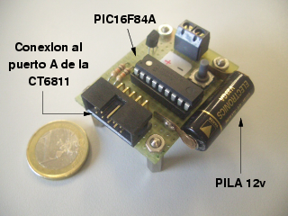
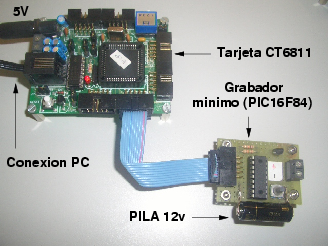
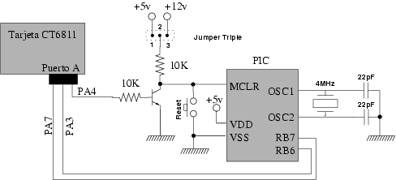
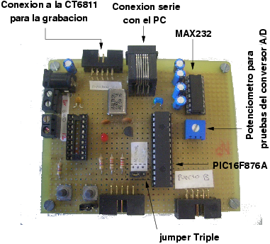
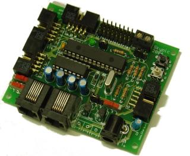
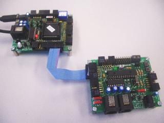

|
Cuaderno técnico 5: Grabación de microcontroladores PIC usando la tarjeta CT6811 |

Existen diferentes procedimientos para grabar programas en los microcontroladores PIC. Uno de ellos es a través de la tarjeta ct6811.
En este cuaderno técnico se describen los pasos a seguir para ello, así como la arquitectura del grabador y el esquema mínimo para su construcción, válido para las familias 16F87X y 16F8X.
También se proporcionan enlaces para que el usuario pueda profundizar en los detalles técnicos de cómo se realiza esta grabación.
La tarjeta ct6811 es muy útil para la construcción y prototipado rápido de robots. El principal inconveniente reside en la dificultad para encontrar estos micros, que ya se han dejado de fabricar. Hemos tenido que migrar la tecnología hacia otros microcontroladores, como los PIC, que están ampliamente difundidos. Con este cuaderno técnico se pretende facilitar esta migración. Si disponemos de una tarjeta ct6811, la podremos reutilizar como grabadora de micros PIC.
La grabación se esquematiza en la figura inferior. Los elementos necesarios son:
Un PC con puerto serie
Una tarjeta ct6811, con un micro modelo E2, en el que debe estar grabado el servidor PICP. El ejecutable (.S19) lo puedes bajar directamente desde este enlace.
La tarjeta entrenadora que contiene el PIC a grabar. Un esquema, utilizado en el laboratorio de Arquitectura de computadores de la UPSAM, lo puedes encontrar aquí. El conector CT1 de este esquema es por el que se realiza la conexión al puerto A de la CT6811. Más información en esta página.
Un cable plano de bus de 10 vías para conectar la ct6811 (PUERTO A) con la tarjeta entrenadora.

En la siguiente figura se muestra un esquema de la tarjeta ct6811 conectada a un grabador mínimo. Los bits PA7 y PA3 de la CT6811 se conectan a los bits RB7 y RB6, respectivamente, del PIC.

El bit PA4 se utiliza para hacer un reset del PIC, para situarlo en modo monitor. Está conectado a la base de un trasistor NPN (por ejemplo un SC107 ó un BC237B) a través de una resistencia de 10K.
Este grabador mínimo precisa de dos tipos de alimentaciones diferentes. Una de 5v para el PIC y otra de 12v para entrar en modo monitor. Los 5v y masa se pueden sacar de la alimentación de la CT6811 (disponibles en el propio PUERTO A, y por tanto, se podrán llevar por el cable de bus que conecta la ct6811 con el grabador mínimo).
Es un grabador genérico, válido para las familias de PICs 16F8X y 16F87X
En la siguiente foto se muestra un ejemplo de este grabador mínimo, para un PIC16F84A. Para la obtención de los 12v se ha utlizado una pila pequeña, de las empleadas en muchos mandos a distancia de los garajes

Incluye, además, una clema para introducir los 12v de otra fuente que no sea la pila. También se colocó un pulsador para hacer un reset manual. Sólo es necesario para el desarrollo del software. Este fue el primer grabador de PICs que construimos, que se puede conectar directamente a una CT6811 .
En esta foto aparece una CT6811 conectada al grabador mínimo para el PIC16F84A. La alimentación de 5v se le introduce a la CT6811 y llega hasta el pic por el cable de bus conectado al puerto A.

Uno de los problemas en la grabación de PICs es que se necesitan 2 tensiones: una de 5 y otra de 12v. Esto lo podemos solucionar de las siguientes maneras:
Introducir los 12v externamente en la tarjeta entrenadora. Para no utilizar otro transformardor o una fuente de alimentación se puede usar una pila de 12v, como la empleada en el grabador mínimo anterior.
Obtener los 12v a través del chip MAX232. Podemos tener construida una placa entrenadora que tenga conexión al puerto serie, que use el chip MAX232. Para las comunicaciones serie sólo utilizaremos las señales tx y rx. Quedan libres pines del MAX por los que es posible obtener los 12v (realmente no son 12 voltios, es un poco menos, pero es suficiente para grabar los pics). Esta es la solución empleada en la tarjeta SKYPIC.
Utilizar algún otro chip que convierta de 5 a 12v, como por ejemplo el ST662A.
Lo más normal es construirse una tarjeta entrenadora para PICs, que además permita grabarlos. En ese caso, necesitamos colocar un jumper triple para selecionar la tensión que se introducirá por la pata MCLR. Si es de 5v, el PIC funcionará en modo normal. Si es de 12v, entrará en modo monitor y se podrá grabar desde la CT6811. Para los 12v se pueden emplear las soluciones comentadas en el apartado anterior.

El esquema es casi igual al del grabador mínimo. Se ha añadido el jumper triple, un pulsador de reset y el circuito de reloj. Cuando se sitúa el jumper entre las posiciones 2 y 3, el micro entra en modo monitor y se puede grabar el PIC a través de la CT6811, como se describe en este cuaderno. Colocando el jumper en las posiciones 1 y 2, el PIC funciona normalmente, ejecutando el programa grabado.
En la foto de la derecha se muestra la placa PICUPSAM, que además del esquema anterior incluye un led y un pulsador para hacer pruebas. Se ha añadido un MAX232, para las comunicaciones serie con el PC y para la obtención de los 12 voltios para la grabación. Esta placa es la que se han construido los alumnos del laboratorio de Arquitectura de Computadores de la UPSAM, durante el curso 2003/2004 (El max232 era opcional). El esquema básico está disponible aquí. Más información en esta página.
|
La CT6811 grabando la placa entrenadora PICUPSAM |
 La tarjeta entrenadora PICUPSAM, con algunas ampliaciones |
La tarjeta Skypic es equivalente a la CT6811 pero para microcontroladores PIC. Tiene exactamente las mismas dimensiones. Los conectores de bus son compatibles y el cable de conexión al PC es también el mismo.
Algunas características son:
Grabación desde un ICD2 de Microchip
Grabación desde una CT6811 o desde otra Skypic
Conmunicaciones serie con el PC
Conexión directa de hasta 8 servos del tipo Futaba 3003 o compatibles
Compatible con la tarjeta CT293+.
En la foto de la izquierda se muestra la tarjeta Skypic . En la de la derecha se está grabando desde una CT6811.
|
 |
 La Skypic grabada desde una CT6811 |
El esquema de grabación es el mostrado en este cuaderno. Los 12v se obtienen de una de las patas del MAX232.
Independientemente de la tarjeta entrenadora usada (Skypic, picupsam o cualquier otra), el proceso de grabación desde una CT6811 es el siguiente:
Tomar una CT6811 con un micro modelo E2
Grabar el Servidor PICP en la CT6811. El ejecutable (.S19) lo puedes bajas de aquí.
Colocar los jumpers de la CT6811 como se indica:
Jumper JP5 quitado
Jumper JP3 puesto (Led activado)
Jumper JP7 en posición OFF
Jumper JP8 puesto
Jumper JP4 en posición RST
Switch 2 a ON, resto a OFF (Modo single chip)
Alimentar la CT6811, conectarla al PC y a la tarjeta entrenadora a grabar (mediante un cable plano de bus de 10 vías)
En el PC deberemos tener instalado el software Skypic-down. En la página se muestra cómo instalarlo y usarlo.
Puedes realizar pruebas de grabación con este fichero.
La tarjeta CT6811 se utiliza como un Stargate. Es una puerta de enlace que nos permite grabar los PICs desde el PC. Sin embargo, podemos utilizar cualquier otra tarjeta que implemente el servidor PICP. Por ejemplo, podemos usar una entrenadora con un PIC16F876A, como la Skypic, la picupsam o cualquier otra. Desde ellas grabaremos los PICs.
Tarjeta Skypic: entrenadora para microcontroladores PIC.
En esta página hay información sobre los microcontroladores PIC y en concreto sobre las placas PICMIN y UPSAM, que las han tenido que construir los alumnos del Laboratorio de Arquitectura de Computadores de la UPSAM, en los cursos 2002/2003 y 2003/2004 respectivamente.
Toda la información necesaria sobre la tarjeta CT6811 está disponible aquí.
Cuaderno técnico 4: Grabación de microcontroladres PIC. Explicación detallada del protocolo ICSP de Microchip, para la grabación de los PIC.
Servidor PICP. Servidor de programación de PICs. Software que implementa el protocolo ICSP de grabación de PICS, para diferentes microcontroladores, entre ellos el 6811. Forma parte del proyecto Stargate.
Skypic-down. Software de grabación de PICs, que se ejecuta en el PC.
Charla en el Chat sobre microcontroladores PIC y Linux. Se muestra el manejo de algunas herramientas para el ensamblador y simulación de aplicaciones para los PICs, en entornos Linux.
Artículo: "Herramientas hardware y software para el desarrollo de aplicaciones con Microcontroladores PIC bajo plataformas GNU/Linux"
Este documento se distribuyen bajo licencia FDL por lo que se permite su copia, modificación y distribución, siempre y cuando se mantenga esta nota.
17/Oct/2004: Corregido enlace roto hacia programa skypic-down
1/Oct/2004:
Añadido enlace hacia la tarjeta Skypic.
Añadido enlace hacia el Índice de cuadernos técnicos
15/Junio/2004: Publicado cuaderno técnico en la web
Andrés Prieto-Moreno Torres. Tarjetas Picmin, Picupsam y Skypic
Alfonso Alejandre. Coordinador del Laboratorio de Arquitectura de Computadores de la UPSAM. Coautor de la tarjeta PICUPSAM.